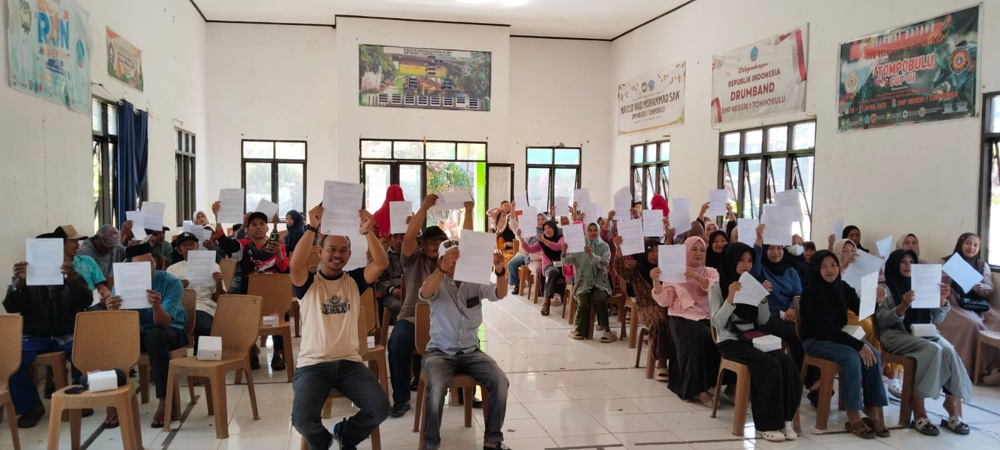

Kegiatan Sekolah
Pertemuan Orang Tua/Wali Siswa Kelas VII dan Penandatanganan Pakta Integritas Tahun Ajaran 2026/2027
Malakaji, 18 Juli 2026 – SMP Negeri 1 Tompobulu menyelenggarakan kegiatan Pertemuan Orang Tua/Wali Siswa Kelas VII yang dirangkaikan dengan penandatanganan Pakta Integritas pada Sabtu (18/7/2026). Kegiatan ini berlangsung di Aula SMP Negeri 1 Tompobulu dan dihadiri oleh orang tua/wali peserta didik baru....
Selengkapnya